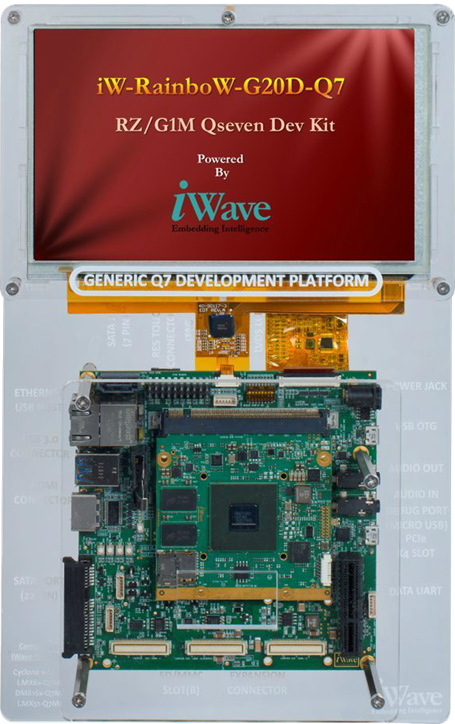

iW-RainboW-G20D-Qseven

Hardware Features
· RZ/G1M/G1N Qseven SOM:
Note1: SATA and PCIe are multiplexed in the RZ/G1M/G1N MPU. Only one can be supported at a time. SATA is supported in the default configuration
Note2: Either USB2.0 Host 2 ports (or) USB2.0 Device can be supported at a time. USB2.0 Host 2 ports is supported in the default configuration
Note3: 7” Capacitive Display kit is optional feature
Note4: Camera daughter board is optional feature
Note5: 16-Bit Camera and 24bpp RGB interfaces are multiplexed. 16-Bit Camera port is supported by default
There are two ways to communicate with the RZ/G1M/G1N Starter Kit board:
Board tests
There are some little demo applications which can help with the RZ/G1M/G1N Development Kit. These demos can be launched using quick launcher buttons on a Weston panel or using remote terminal.
1. QtCinematicExperience Demo - Cinematic experience with Qt graphical effect
2. QtEverywhere Demo - collection of qt applications run on various device interfaces
3. Qt Launch Demo - introduction of Qt5 features with illustration examples
4. Qmlvideo Demo - Open video/camera with transformation effects
4. Qmlvideofx Demo - Open video/camera/image with shader effects
References